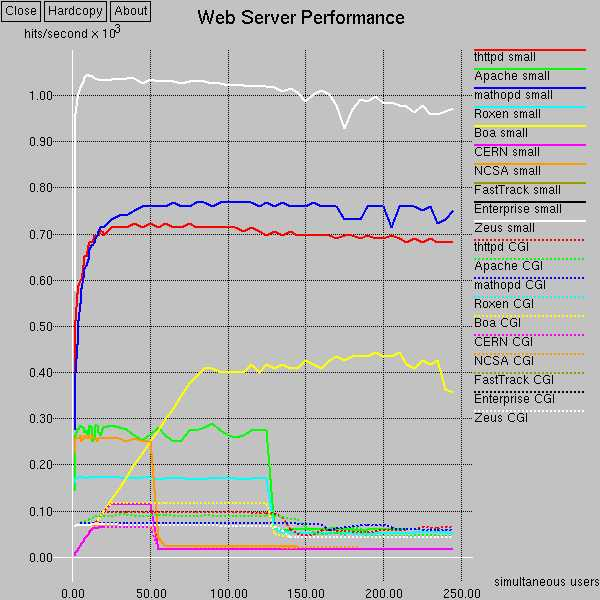

Computer Networks and Network Security - Lab Assignment Three:
HTTP
Protocol and Web Server
Due Nov. 8, 2022 by email to the teaching assistant. This assignment gives you a chance (Part 1) to better understand HTTP design, including its protocol and the processing at the server (Part 1). In Part 2, we will extend part 1 to give you a chance to become more familiar with concurrent network programming, covering topics including
threads, synchronization, wait/notify (monitor), asynchronous I/O,
and benchmarking. Hence, when designing Part 1, please consider extension to Part 2 in mind.
Protocol
The server that we will design is a simplified version of HTTP
1.0. The most basic application message, encoded in
ASCII, from the client to the server is:
GET <URL> HTTP/1.0
Host: <ServerName>
CRLF
where CRLF is carriage return and line feed, representing an
empty line. This request asks for the file stored at location
<DocRootServerName>/<URL>, where DocRootServerName is the root
directory for the requested server name.
For example, if <DocRooServerNamet>=/tmp/mydoc, and <URL> is
/file1.html, the server will return the file
/tmp/mydoc/file1.html, if it exists. If the request does not specify the Host
header, the server returns the first server (virtual host) configured; see below.
The basic reply message from the server to the client, encoded in
ASCII, is:
HTTP/1.0 <StatusCode> <message>
Date: <date>
Server: <your server name>
Content-Type: text/html
Content-Length: <LengthOfFile>
CRLF
<file content>
CRLF again represents an empty line. If the file is found and
readable, the returned <status code> is 200 and you can give
a message such as OK. Otherwise, please give an error code of 400.
If you are curious about HTTP error codes, you can see
http://www.ietf.org/rfc/rfc1945.txt. You can use Java File
class to obtain file size.
Part 1a: Simple Client
Your test client should be multi-threaded. The client can
generate test requests to the server with the following command
line:
%java SHTTPTestClient -server <server> -servname <server name> -port <server port> -parallel <# of threads> -files <file name> -T <time of test in seconds>
In a typical deployment, we do not need to specify both server and
servname. For example, in a typical setting, a Web hosting server with IP1
may host multiple virtual hosts named www.vh1.com, www.vh2.com. All of these
DNS names will resolve to the same IP1. But for our testing, since we assign
our server only one single DNS name, we add the servname switch to specify the virtual host.
The <file name> is the name of a file that
contains a list of files to be requested. For example, a file may
look like the following:
file1.html
file2.html
file3.html
file1.html
Then each thread of the client will request file1.html, then
file2.html, then file3.html, and then file1.html. The thread then
repeats the sequence. The client simply discards the received
reply. The client stops after <time of test in seconds>. The
client should print out the total transaction throughput (# files
finished downloading by all threads, averaged over per second),
data rate throughput (number bytes received, averaged over per
second), and the average of wait time (i.e., time from issuing
request to getting first data). Think about how to collect
statistics from multiple threads.
Part 1b: Sequential and Per-thread HTTP Servers
In class we will cover multiple approaches to implementing
network servers. In Part 1, you will need to implement only the sequential server an the per-thread server.
You can feel free to reuse the example code provided in class.
When your server executes, it must support the following:
- Configuration: Your server must support a configuration file, which we follow the Apache configuration style (http://httpd.apache.org/docs/2.4/vhosts/examples.html.
Note that we implement a single server name, not multiple, as the
Apache example configuration shows. We start a server by reading a
configuration file:
%java <servername> -config <config_file_name>
The basic configuration parameter is listening port:
Listen <port such as 6789>
A configuration file should also contain one or more virtual hosts shown below. We use the same format as the Apache, but your server ignores the *:6789 part.
<VirtualHost *:6789>
DocumentRoot <root dir>
ServerName <server name>
<VirtualHost>
We recommend that you consider
a hash map in your program to implement configurations.
An example configuration file is httpd.conf.
- HTTP Methods: Your server must support HTTP 1.0
(http://www.w3.org/Protocols/HTTP/1.0/spec.html) GET
method.
- Headers: Your server must send the Last-Modified header and
understand the If-Modified-Since header from client. This means
that you will need to parse date format. For this assignment,
we use the rfc1123-date format. Your server also needs
to understand the User-Agent header. For other headers, your
server can skip.
- URL Mapping: If the URL ends with / without specifying a file
name, your server should return index.html if it exists;
otherwise it will return Not Found. If the request is for
DocumentRoot without specifying a file name and the User-Agent
header indicates that the request is from a mobile handset
(e.g., it should at least detect iphone by detecting iPhone in
the User-Agent string), it should return index_m.html, if
it exists; index.html next, and then Not Found.
- Caching: Your server needs to include a basic caching mechanism to speedup handling of requests for
static files. The cache is a simple Java Map, with key being the
file and content the whole file in an array. Before reading a file
from disk, the server checks whether it is already cached. Think:
how to handle multiple threads reading and adding to the Map.
The cache size can be specified in the configuration file:
CacheSize <cache size in KBytes>
To simplify your server, there is no cache replacement; i.e.,
when the cache is full, no addition to the cache.
- Dynamic content using CGI: Your server needs to check if a mapped file is
executable. If so, it should execute the file and relay the
results back to clients. Our assignment only handles the case
that the input to the external program is from GET. Please see
Java ProcessBuilder
on how to start set environment variables and start a dynamic
process. The example of the doc can be helpful. You will need
to read RFC 3875
to set the right environment variables. You will need to write
a dynamic CGI program to test your invocation.
- Heartbeat monitoring: Your server needs to implement a heartbeat monitoring
URL service to integrate with a load balancer (e.g., Amazon Load Balancer we covered in class). In particular, a
load balancer may query a virtual URL (i.e., no mapped file)
named load (i.e., with request
GET /load HTTP/1.0). If the server is willing to accept new
connections, it should return status code 200; otherwise, it
returns code 503 to indicate overloading. Your software design
should follow a "plugin" design, at run time, of different algorithms to
compute overloading conditions. In particular, the monitor class file name can be specified in the configuration file.
Monitor <MyCoolMonitorClassName>
Please describe a particular
design and implement it.
Part 2a: Concurrent HTTP Servers using Threads
As we covered in class, a key approach to controlling the overhead of threads
is to use a thread pool. We covered two designs: (1) shared welcome socket; and
(2) a shared queue with wait and notify. Please implement TWO of the following three threadpool servers:
-
thread pool with service threads competing on welcome socket;
-
thread pool with a shared queue and busy wait;
-
thread pool with a shared queue and suspension;
For each design, your server needs to read from the configuration file the pool size:
ThreadPoolSize <number of threads>
Part 2b (Option 1): Async Server: Multiplexed, Nonblocking Server (Reactive Server)
- We recommend that the software structure of your asynchronous
server be
based on v3 of the EchoServer that we discussed in
class. You need to write a handler for the particular
protocol. You can feel free to modify the structure if you see
any way to improve it (fix error handling, etc). You need to
document your changes.
- Design question: a production-level server should have a timeout thread. Upon
accepting a new connection, the accept handler should register a
timeout event with the timeout thread with a callback function.
The timeout value is specified by IncompleteTimeout
<timeout in seconds>. The default timeout value is
3 seconds. If the connection does not give a complete request to
the server approximately within timeout from the time
of being accepted, the server should disconnect the
connection. Note that the timeout monitoring thread should not
directly close a channel that the dispatcher thread is still
monitoring (why?). You need to think very carefully about the
exact details of the interaction between these two threads,
and describe your software design in your final report. You DO not need to
implement it, but if you do, please let us know in your report, and you
will receive a 5% bonus points if your implementation pass the
functionality test.
Part 2b (Option 2): Async Server: Proactive Server
In this part, instead of using the select structure, you use
AsynchornousServerSocketChannel
and AsynchornousSocketChannel
design, based on Future/Listener to implement the same functionality as in
2b.
Part 2c: Comparison of Designs
A great way to learn about your design is to compare with other designs.
You need to read the documents or code of one related frameworks: Netty.
Netty is an Java async IO framework used by many; see for example use cases. Please read Netty user's guide and answer the following questions:
- Netty provides multiple event loop implementations. In a typical server channel setting, two event loop groups are created, with one typically called the boss group and the second worker group. What are they? How does Netty achieve synchronization among them?
- Method calls such as bind return ChannelFuture. Please describe how one may implement the sync method of a future.
- Instead of using ByteBuffer, Netty introduces a data structure called ByteBuf. Please give one key difference between ByteBuffer and ByteBuf.
- A major novel, interesting feature of Netty which we did not cover in class is ChannelPipeline. A pipeline may consist of a list of ChannelHander. Compare HTTP Hello World Server and HTTP Snoop Server, what are the handlers that each includes?
- Please scan Netty implementation and give a high-level description of how ChannelPipeline is implemented.
Part 2d: Performance Benchmarking
One important computer systems skill is to evaluate the
performance of design alternatives. In this assignment, we conduct
performance evaluation of the alternatives:
-
To conduct the testing, you will need to setup the
DocumentRoot at the server. It is highly recommended that you
generate a number of files of different sizes under
DocumentRoot named such as file1.html, file2.html, ...,
file1000.html. If you download gen.tar,
and untar it (tar -xvf gen.tar), you will see a directory
named doc-root and a directory named request-patterns.
To compare the performance with Apache, we will use our lab's Apache server. We will use
/var/www/html/cnns/web/www-root to store
testing files. Suppose we want to fetch
/var/www/html/cnns/web/www-root/html-small/doc1.html. To
use our lab's Apache server, the URL should
be:
http://ApacheServer/www-root/html-small/doc1.html
or
http://ApacheServer:80/www-root/html-small/doc1.html
To use your server, suppose you set the DocumentRoot as
/home/zzh/web/www-root,
and you run your server on 192.168.0.120 at port 9876.
Then the URL is:
http://192.168.0.120:9876/html-small/doc1.html
- For the test, you will need to generate a request file for the
client. The request pattern can have a major impact on your
server performance (how requests repeat). The TA will use a Pareto
distribution to generate request patterns to test your
server. You can write a simple Java program or script to
generate the request.
- You should vary the client parallel (see Client command line
above) with a reasonable increment schedule (e.g., 1, 2, 3, 4,
5, 10, 15, 20, 25, 30, 35, 40, 45, 50, 60, 70, ...). A
reasonable test time is 60 to 120 seconds. You can write a
simple script to automate this task.
- For multi-threaded server, please try two thread pool sizes:
one small and one large.
Part 2e: Report
- You should submit a report on your server design.
- Please answer all questions we specified above.
- Please report the measured performance of both Apache and
your best server for these performance metrics: throughput and
(mean) delay. You can use GNUplot or whatever figure plotting tools you
see fit to generate
figures. Below is an example figure showing the performance of
multiple servers.
- The TA will benchmark all servers and pick
the top three students with the highest throughput. These students will
each receive
a bonus of 25% for both lab 3 and lab 4.

Submission
- Please include a README in your submission
to tell the TA the directory structure. Please generate a single tar or
zip file containing all of your files.
References
- Book
- Java Network Programming (4th ed.) by Elliotte Harold
is a good reference book on Java network programming. Our class
schedule page provides an internal copy of this book. The examples codes can be found here.